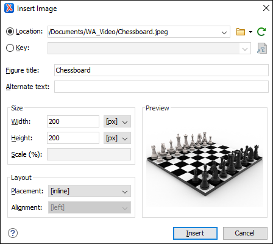

Working with Images in DITA Topics
There are several ways to add images to a DITA topic, depending on if you want to create a figure element (with a title and caption), just insert an image inline, or if you want to use multiple versions of a graphic depending on the situation. For instance, you might want to use a specific image for each different product version or output media.
Adding an Image Inline with the Insert Image Dialog Box
Use the following procedure to add an image inline:
- Place the cursor in the position you want the graphic to be inserted.
-
Select the
 Insert
Image action. The Insert Image dialog box
appears.
Insert
Image action. The Insert Image dialog box
appears.Figure 1. Insert Image Dialog Box  -
Configure the options in this dialog box and click Insert.
The Insert Image dialog box includes the following options and features for inserting images into a DITA document:- Location
- Use this option to specify a URL for the image as the value of an
@hrefattribute inside the<image>element. You can type the URL of the image you want to insert or use browsing actions in the Browse drop-down menu (there is also a history drop-down).
Browse drop-down menu (there is also a history drop-down). - Key
- Use this option to insert the selected key as the value of a
@keyrefattribute inside the<image>element. All keys that are presented in the dialog box are gathered from the root map of the current DITA map. You can use the Choose Key Reference button to open
the Choose Key dialog box that presents the list of keys
available in the selected root map.Note: If your defined keys are not listed in this dialog box, it is most likely trying to gather keys from the wrong root map. You can change the root map by using the Change Root Map link in the Choose Key dialog box or change it in the Context option in the toolbar of the DITA Maps Manager.
Choose Key Reference button to open
the Choose Key dialog box that presents the list of keys
available in the selected root map.Note: If your defined keys are not listed in this dialog box, it is most likely trying to gather keys from the wrong root map. You can change the root map by using the Change Root Map link in the Choose Key dialog box or change it in the Context option in the toolbar of the DITA Maps Manager. - Figure title
- Use this text box to insert a
<title>and<image>element inside a<fig>. - Alternate text
- Use this text box to insert an
<alt>element inside the<image>. - Size
- Use this section to configure the Width and
Height of the image, or Scale the
image. Specifying a value in these options inserts a
@width,@height, and@scaleattribute, respectively. - Layout
- Use the options in this section to insert
@placementand@alignattributes into the<image>element. - Preview
- The Preview box shows a thumbnail of the selected image so that you can see a preview of the image before clicking Insert.
Adding an Image Inline with Drag/Drop (or Copy/Paste) Actions
@href attribute in a DITA <image>
element:<image href="../images/image_file.png"/>
Adding an Image in a Figure Element
To add an image in a figure:
- Add a
<fig>element to your document at the appropriate place. - Add a
<title>and/or<desc>element to<fig>, according to your needs. - Add an
<image>element to the<fig>element.
<fig> element has a number of other child elements that may
be appropriate to your content. See the DITA documentation for complete information about
<fig>.<image>,
<title>, and <desc> elements will appear in
the output is determined by the output transformation. If you want to change how they
appear, you may have to modify the output transformation, rather than your source
content.Floating Images in DITA Topics for PDF or XHTML Output
Oxygen XML Editor provides the possibility of floating an image to the left or right of blocks of content in DITA topics, for both PDF and XHTML output.
@outputclass attribute on the
<image> element. The possible values are:- float-left
- float-right
<p><image href="../../images/Lilac.jpg" scale="45" outputclass="float-right"/> <b>Lilac</b> (<b>Syringa</b>) is a genus of about 20–25 species of flowering plants in the olive family (<b>Oleaceae</b>), native to Europe and Asia. </p>
Searching for References to Images
 Search
References from the contextual menu. The result depends on how the image is
defined, as follows:
Search
References from the contextual menu. The result depends on how the image is
defined, as follows:- If the action is invoked on an
<image>element that contains an@hrefattribute but does not include an@idattribute, all direct references to the image are reported. If the<image>element does have an@idattribute, all links to the specified ID are also reported. - If the action is invoked on an
<image>element that contains a@keyrefattribute but does not include an@idattribute, all direct references to the image are reported along with all instances where the key is used. If the<image>element does have an@idattribute, all links to the specified ID are also reported.